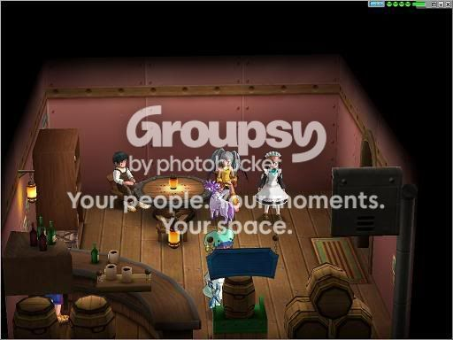
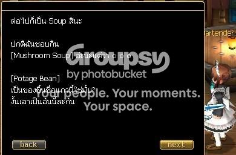

[GM]เป๊ปเป้ เขียน: :oops: เควส Event รองเท้า Lv.55 สำหรับอาชีพ Farmer
เริ่มเควส Event นี้โดยการคุยกับ NPC : Bartender ที่อยู่ในร้านเหล้า
เมือง Iron City Upstairs ค่ะ (ดังภาพ)
:arrow: เราจะได้รับ Item : Order(Event) มา 1 ชิ้นค่ะ
เค้าจะให้เราทำอาหารมาส่งตาม Order ค่ะ
:arrow: นำตัวอย่าง Order บางส่วนมาให้ชมค่ะ
:oops: Order ออกจะเยอะไปสักนิด แต่เป็นกำลังใจให้ Farmer ทุกท่าน สู้ๆ นะคะ :oops:


คือว่า ได้ไปหาของตาม Order มาจนครบ ตามภาพ

Oracge Jam กับ Plam Jam ได้จากเปิดกล่อง.. ( ในรูป สีเหลือง กับสีดำ ) เพราะไม่สามารถทำได้
แต่ก้ทำเองติดมาด้วย แต่ได้ Grape Jam กับ Cherry Jam ในภาพ
แต่ปรากฏว่า พอนำของมาส่ง กลับไม่มีอะไรเกิดขึ้น...

ไม่ทราบว่า เควสนี้ ทำผิดที่ตรงไหน... ไม่ว่าจะคุยกับ NPC : Bartender หรือ NPC : Gourment King ก้ไม่มีอะไรเกิดขึ้น...
รบกวน [GM]เป๊ปเป้ หรือ ผู้ที่รู้ ช่วยแก้ปัญหาให้ที - -.